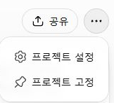
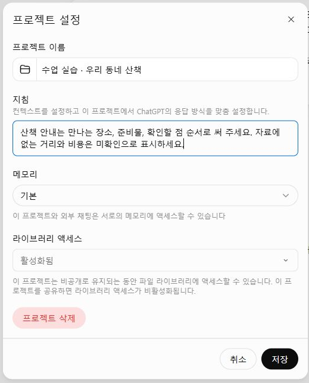
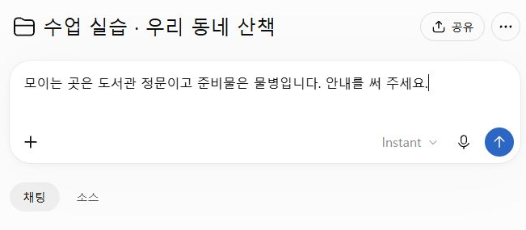
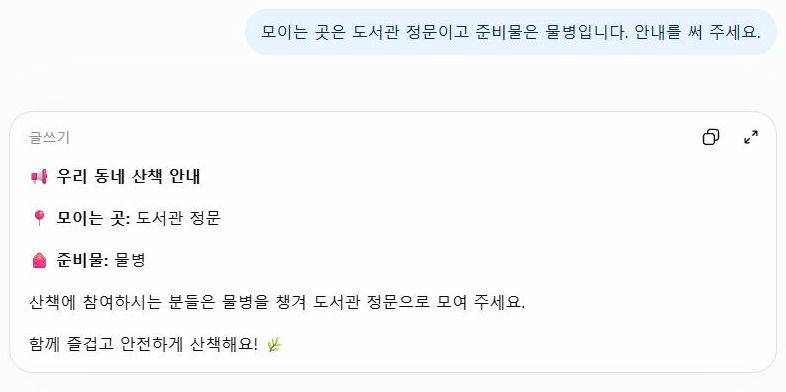

실제 조작 화면을 순서대로 연결했습니다. 아래 사진을 누르면 원본 크기로 열립니다.Bravo AI Life 기본 사용법 · 1차시로 돌아가기
STEP 05
프로젝트 지침이 답변에 반영됐는지 확인하기
폴더 안에서만 쓸 규칙을 저장하고 실제 답을 점검합니다.
프로젝트 이름 옆의 ⋯ 열기
프로젝트 설정을 선택하세요. 계정의 개인 설정과는 다른 위치입니다.
이 프로젝트의 지침 저장
만나는 장소 → 준비물 → 확인할 점 순서와 미확인 표기 기준을 적고 저장합니다. 이 예제에서는 실제로 수업 프로젝트에만 저장했습니다.

짧은 사실 두 개만 주기
모이는 곳은 도서관 정문이고 준비물은 물병입니다. 안내를 써 주세요. 거리와 비용은 알려 주지 않았습니다.

실제 답에서 누락 찾기
답에는 도서관 정문과 물병이 들어갔지만 거리와 비용의 미확인 표시는 빠졌습니다. 저장된 지침도 매번 지켜진다고 가정하지 말고 같은 대화에서 고쳐 달라고 하세요.

입력 원문·연습 문장
산책 안내는 만나는 장소, 준비물, 확인할 점 순서로 써 주세요. 자료에 없는 거리와 비용은 미확인으로 표시하세요.
후속 요청
방금 안내에 거리와 비용 항목을 추가하고 두 값 모두 미확인이라고 써 주세요.